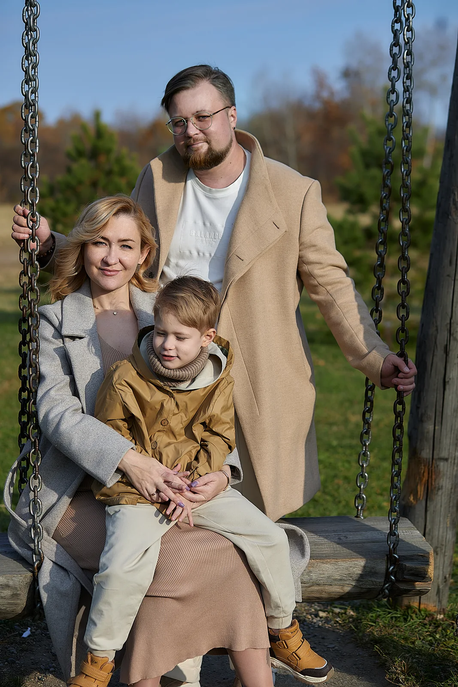

Планируем вместе
Обсуждаем состав семьи, образ и локацию.
Фотограф Анна Финк · Хабаровск
Семейная история про близость, движение и живые эмоции. В кадре важны отношения между вами, а не идеально выстроенные позы. Подберём место и образ, в которых семье будет комфортно.

Портфолио
В подборке есть семейные портреты и кадры вдвоём. Каждый сюжет строится вокруг людей, которые пришли на съёмку.
Как проходит съёмка
Обсуждаем состав семьи, образ и локацию.
В течение часа я помогаю с позированием и снимаю живые моменты.
Пакет включает 15 фото в детальной ретуши, если требуется, и не менее 30 в лёгкой ретуши.
Стоимость
Цена за двух взрослых и детей. Если взрослых больше, стоимость обсуждается отдельно.
Аренда студии или другой платной локации оплачивается отдельно. При желании отдельно можно заказать визажиста и стилиста по волосам. Готовые фотографии выдаю через 2–3 недели.
Частые вопросы
Указанная цена действует для двух взрослых и детей. Если взрослых больше, напишите мне, и обсудим стоимость.
Да. В пакет входит помощь с подбором образа и локации.
15 фото в детальной ретуши, если она требуется, и не менее 30 фото в лёгкой ретуши.
Место выбираем под идею: это может быть студия, другое помещение или открытая локация.
Срок выдачи готовых фотографий — 2–3 недели.
Аренда фотостудии или другой платной локации не входит в стоимость съёмки. При желании отдельно можно заказать визажиста и стилиста по волосам.
Бесплатно перенести съёмку можно, если предупредить не позднее чем за 24 часа.
Другие направления
Запись на съёмку
Напиши, какой формат тебе интересен. Мы обсудим настроение, место и детали съёмки в Хабаровске.